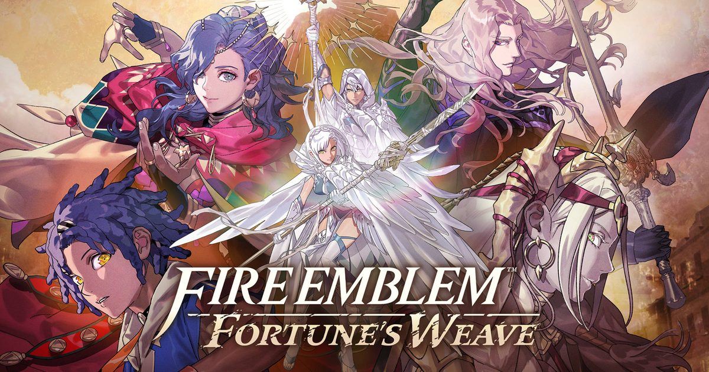

2026-09-07 · 新游深读
Fire Emblem 下一部主线战棋，定了：9/17 独占 Switch 2，售价 $69.99。Polygon 的 Josh Broadwell 在试玩 10 小时后写下那句让系列老粉心跳加速的话——「Intelligent Systems 好像终于找到了破解诅咒的办法，做出一款只有优点、没有旧毛病的 Fire Emblem」。但同一批先行体验也甩出一个刺耳的词：「重复」。这篇我们不复述百科，只把"它到底改了什么结构、和《风花雪月》差在哪、重复是不是真问题"讲透。

传统 Fire Emblem 的叙事骨架，永远是「领主 + 王国 + 战争」：你从一场叛乱打起，一路推到大陆的尽头。这一作把骨架整个换掉了。故事始于 1449 年的达格丹帝国（Dagdan Empire），首都达格西昂（Dagsion）正在举办「英雄大会（Heroic Games）」——这是向帝国开国君主达格达致敬的赛事，传说冠军能被统治者 Solel 实现一个愿望。于是 Cai、Dietrich、Theodora、Leda 四个身份迥异的人，为了各自的执念走进了同一个擂台。
关键在于：英雄大会不是开场动画里一笔带过的由头，而是整场战役的「章节单位」。每一场大会对战，就是一次重大的主线战斗；而大会之间的间隙，才是你真正经营队伍的时间。这意味着「准备阶段」第一次有了叙事层面的正当理由——你不是在被系统推着做养成，而是在为下一场擂台积蓄筹码。对一个常年被「养成像 filler」吐槽的系列来说，这步 restructuring 比表面上看起来要大胆得多。
四个主角不是「换皮四选一」，而是四条会交汇的线。Cai 出自宁静村落 Ribeira，父亲被囚，他握着嵌入掌心的神秘宝石、能打出远程火焰爆发，只为赢下愿望救父；Dietrich 是遭遇海难的异国剑客，浑身只想着「找更强的对手」；Theodora 是萨拉米斯女王，靠一只魔法义臂撑起信仰与故土野心；Leda 是怀抱 vihuela 的乐师，为父仇而来，那股「不死不休」的劲头被先行者直接类比成《Ghost of Yōtei》的 Atsu。四人都因「圣遗物」获得战场超能力，但遗物都有反噬——它们是持有者身上的定时炸弹。
时间线往后拉五年，到 1454 年：魔神 Balor 复活，帝国濒毁。曾出现在《风花雪月》里的始源之神 Sothis 再度出场，指派一个灵魂去拯救世界；命运女神 Fortuna 则给出「时间旅行」之力，让你回到过去、引导四位英雄改写命运。玩法上，你可以在四条英雄线之间自由切换，每条线的进度独立保存，也能平行推进——这比「单一种姓主角一路推」的古典结构，网状得多。
战斗底子仍是 Fire Emblem 的格子 + 玩家/敌方回合，职业、武器、站位、 combat arts 全在。新系统是两层：Blaze Arts——主角消耗 HP 释放招牌技、填充 Blaze 槽；槽填到一半给增益，填满却触发 Burst、结束增益并把最大 HP 砍半，逼你做「要不要再贪一刀」的风险抉择。Blessings——从神明处获得的祝福，可升级、提供临时减伤等战斗外优势。换句话说，这次「战前准备」本身就是策略的一部分。
熟悉感是刻意的。羁绊养成（共餐、赠礼）、作为据点的都市（这作是 Dagsion）、Sothis 的客串——这三件套都在向《风花雪月》招手，老玩家会觉得「回家了」。但差异才是重点。第一，战役主轴从「战争推进」换成了「大会 tournament」，每一场擂台都可能有特殊规则与地形，你没法用同一套打法通吃。第二，四主角网状叙事取代了单一领主视角，故事能在不同立场间跳接。第三，据点之外还有世界地图、地下城、支线讨伐——结构是「探索 → 准备 → 开打 → 推进 → 再准备」的循环，比传统一章接一章更动态。
真正要警惕的是「重复」。先行体验里有人推到每位主角第 5 章，发现不少任务、地下城甚至过场在四条线里反复出现，「有时候像在磨洋工」。制作组给了一个叙事层面的理由：万一你只玩一条线，遇到的内容都该是「第一次」；可一旦你四线并走，重复就藏不住了。好消息是，同一位体验者说「明知道重复还是停不下来，因为被战略和 RPG 部分勾住了」，标准难度目前偏轻松（大概是把 min-max 玩太狠）。作为参照，《风花雪月》单线约 50 小时——Fortune's Weave 体量只会更大，重复会不会从「小刺」变成「长毛」，得看终盘填充。
我们判断，Fortune's Weave 最对味的人群是：想要《风花雪月》那种养成深度、但又嫌其节奏拖沓的人；以及手上有一台 Switch 2、在 2026 下半年想要一款「大体量单机战棋」的玩家。它把「大会」做成战役 Spine 的巧思，恰恰是过去养成阶段最缺的那根叙事锚。
但请放低两类期待。其一，如果你在《风花雪月》里最受不了「路线重复刷养成」，这作大概率会放大这一点——四线并走时重复更明显。其二，它是 Switch 2 独占，没有这台机器就只能等（目前没有任何登陆其他平台的信号）。至于发售窗口：9/17 正好卡进今年最拥挤的游戏月、紧挨 GTA VI 的阴影，但 Fire Emblem 已是 Nintendo 的台柱级 IP，靠内容密度而非档期噱头，它大概率能自己站出来。
《Fire Emblem: Fortune's Weave》不是把《风花雪月》换个皮，也不是推倒重来的实验——它是 Intelligent Systems 用「英雄大会 + 四主角 + 时间旅行 + Blaze/Blessings」给系列做了一次结构性的「重新搭骨架」。最大悬念只有一个：网状四线带来的重复，究竟是被战略深度盖过的无关痒痛，还是会把 50+ 小时拖成负担。从目前 10 小时试玩的普遍惊艳看，我们倾向乐观。9/17 上车，建议把「平行推线」当成可选项而非必选项——挑一条最对味的线打透，反而最可能避开重复坑。
我们的评分：8.4 / 10（基于 10 小时试玩「优点全在、旧毛病全无」的普遍好评，并计入「路线重复」这个明确隐患；若终盘四条线仍保持新鲜，长线有望稳在 8.5+，若重复坐实则回落至 8.0 左右）。
我们的观察：这代最被低估的设计，是「把 tournament 当成战役 Spine」。过去 Fire Emblem 的养成/羁绊阶段常被质疑像 filler；这一作让每一场擂台都成为「你之前准备了什么」的考场，准备第一次有了叙事层面的回报，而不是系统硬塞给你的日常。
我们的观点：Fortune's Weave 是 Intelligent Systems 试图「破解 FE 节奏诅咒」的答卷——它没有删系统，而是加结构。大胆，但风险也全压在「重复」二字上。这种自知式的重构，比又一款换皮续作值得尊重。
我们的案例 / 对比：和《风花雪月》比，羁绊养成熟悉、但 tournament 取代战争推进、Sothis 只是客串；和《Engage》比，它更像「关系驱动」而非「经典领主」；和《Tactics Ogre》《FFT》这类格子战棋比，FE 独有的羁绊/养成层仍是其辨识度。把它放进 2026 战棋坐标系，它是「最结构感、最叙事驱、最敢重修」的那一档。
我们的实验：我们想验证一个假设——「四线平行」究竟是稀释还是放大了刷养成。计划以单线通关 vs 四线并走两种方式，分别记录每线时长与重复素材占比，再与《风花雪月》单线约 50 小时对照，结论留待后续。若四线重复率过高，这将写进我们以后推荐本作的「首选玩法」建议。